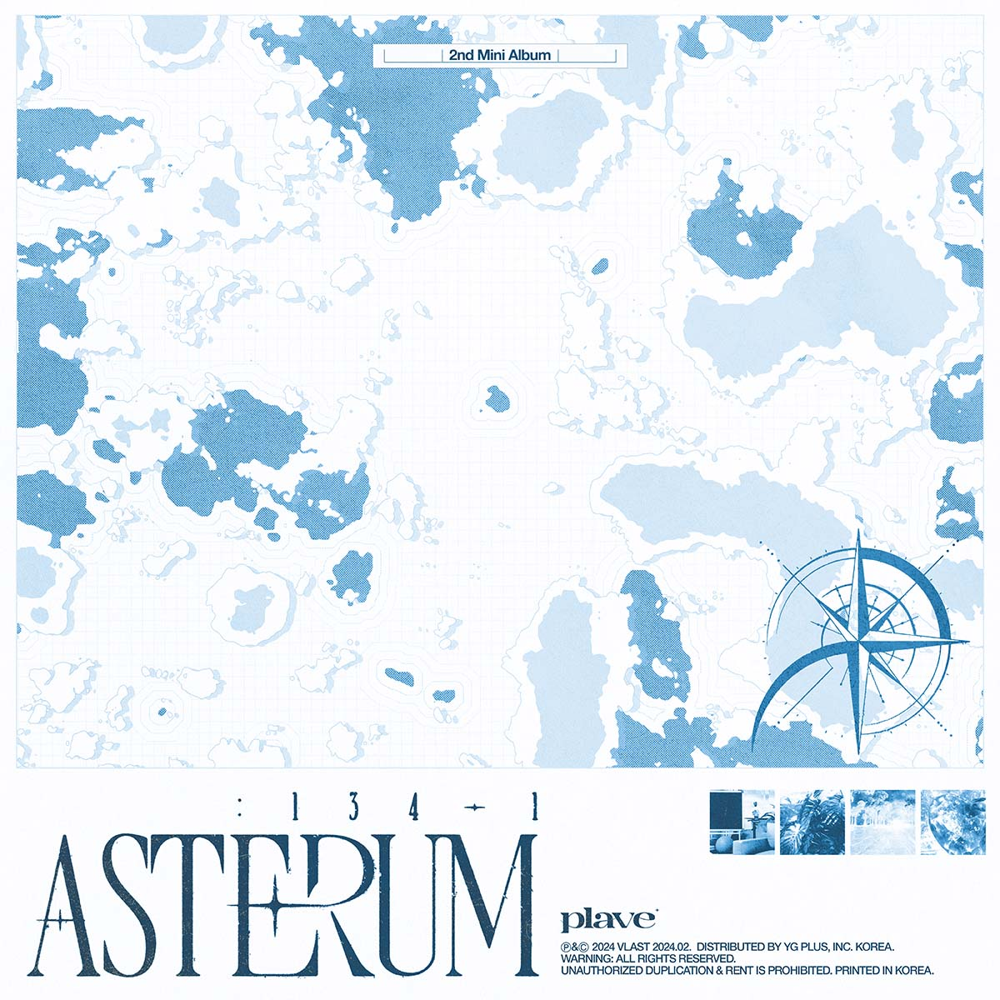

ASTERUM : 134-1
PLAVE
INFO
발매일
장르
발매사
기획사
2024.02.26
R&B/Soul
YG PLUS
VLAST
PLAVE
INFO
발매일
장르
발매사
기획사
2024.02.26
R&B/Soul
YG PLUS
VLAST
I got stuck in roulette, ayy
돌아가는 문제 속 헤매고 있어
We wanna touch the moon
도달할 수 없다는 건 참 어리석었지
Watch me, ooh
Watch me, ooh (you know, I know, ah)
Watch me, ooh, oh-ah-oh-ah-oh-ah
Watch me, ooh, oh-ah (you know, I know, ah)
세상은 다 거짓말 (eh)
가면에 숨긴 red eyes (eyes, red eyes)
All I can say is "freedom" (oh, no)
Vida preciosa (ooh), livin' la vida loca (ooh)
의미 없단 건 결국 없다고, yeah
너도 알고 있잖아 (ooh), 그 속 안에 진실과 (ooh)
마주치는 순간, you'll be alright
Watch me, ooh
Watch me, ooh (you know, I know, ah)
Watch me, ooh, oh-ah-oh-ah-oh-ah
Watch me, ooh, oh-ah (you know, I know, ah)
Gold's getting bigger, gold on my neck
Shining 24/7, they call me mad
Gold's getting bigger, gold on my neck
Shining 24/7, they call me mad
One hunnit, 白이던 100이건 상관없이, I get it all
원하면 다 이뤄나가, why so serious?
God damn, 시간은 금 흘린 땀방울 뒤엔
우린 고급 지게 놀아 play, 부
Watch me, ooh
Watch me, ooh (you know, I know, ah)
Watch me, ooh, oh-ah-oh-ah-oh-ah
Watch me, ooh, oh-ah (you know, I know, ah)
* 응원법이 포함된 가사입니다.
(Way 4 Luv)
(oh Way 4 Luv)
(Way 4 Luv)
(0:13)
플 레 이 브
Way 4 Luv
Way 4 your Luv (Way 4 Luv)
(Way 4 Luv)
Way 4 Luv
Way 4 your Luv (Way 4 Luv)
(Way 4 Luv)
거짓말이라도 믿을게
(믿을게)
영화 같은 스토리의 끝에
It’s like a movie
우린 참 어렸었지
저 별들을 닮기엔
모든 게 서툴렀지 Oh yeah
뜨거웠던 숨은 꿈이 되어
내 심장에 불을 지폈어 날 멈출 수 없도록
더욱
떨어져가는
폭포
처럼 내 몸을 던졌어 (어)
그 속에 피어난 Flo(wer)
어느새 노을이 지고 있어 그곳으로
(함성)
Moonlight
끝이 없는
Midnight
Sunshine
반복되는
Highlight
Woo woo woo woo woo woo woo
(Woo woo woo woo woo woo woo)
Woo woo woo woo woo woo woo
(Woo woo woo woo woo woo woo)
Way 4 Luv
Way 4 your Luv (Way 4 Luv)
(Way 4 Luv)
Way 4 Luv
Way 4 your Luv (Way 4 Luv)
(Way 4 Luv)
거짓말이라도 믿을게
(믿을게)
영화 같은 스토리의 끝에
Way 4 Luv
Way 4 your Luv (Way 4 Luv)
(Way 4 Luv)
사계절이 되어줘 My Venus
거짓말이라도 믿을래
(믿을래)
황홀한 이 여정의 끝에
쏟아지는 유성 아래
형 형색의 Rainbow
(bow)
지나치게 아름다워
A to T, I’m driving now
There’s no rush hour
Let’s go Eiffel Tower
Imagine we smile at the same time
(함성)
Moonlight
끝이 없는
Midnight
Sunshine
반복되는
Highlight
Woo woo woo woo woo woo woo
(Woo woo woo woo woo woo woo)
Woo woo woo woo woo woo woo
(Woo woo woo woo woo woo woo)
Way 4 Luv
Way 4 your Luv
(Way 4 Luv)
Way 4 Luv
Way 4 your Luv
(Way 4 Luv)
거짓말이라도 믿을게
(믿을게)
영화 같은 스토리의 끝에
같은 시선 속에 맞닿은 우리야
너와 날 닮은 이 순간
끝나지 않을 여행이라
It’s a beautiful life
플 레 이 브
Way 4 Luv
oh Way 4 LUV
(Way 4 Luv)
거짓말이라도 믿을게
(믿을게)
영화 같은 스토리의 끝에
Way 4 Luv
uh Way 4 your Luv
사계절이 되어줘 My Venus
거짓말이라도 믿을래
(믿을래)
황홀한 이 여정의 끝에
남예준 한노아 채밤비 도은호 유하민
플레이브 웨 이 폴 럽!
(함성)
Woo woo woo
woo woo woo
Woo woo woo woo
woo woo woo
Woo woo woo woo
아, 매워
뭐가요?
맵다고
뭐가요?
어, 매운 거? 라쓰고?
그런 거 말고 우리가 맵다
은호야 가자
네, 형님 eh
어디 갈까? 고민하지 마
누가 뭐래도 난 충분하니까
있잖아, 진짜로 하나도 부럽지가 않아
Billie Jean is not my lover (ah)
타격 없어 떠들어 더
내 스타일은 한 귀로 듣고 흘렸어
죄송해요 귀엽게 봐주세요
버추얼 아이돌 우린 PLAVE
난 삐뚤빼뚤 (삐뚤빼뚤), 안 비슷비슷해 (기특 기특해)
난 삐걱삐걱 (삐걱거려), 안 비겁 비겁해
Shake it 흔들어 hater들은 그냥 가세요
키득 키득, 지긋지긋
난 삐뚤빼뚤 (삐뚤빼뚤), 안 비슷비슷해 (기특 기특해)
난 삐걱삐걱거릴수록 다들 좋아해 (닥터)
Shake it 흔들어 hater들은 그냥 가세요
키득키득해, 지긋지긋해 (hey, yeah)
너 부정하지 마 (할 수 있잖아)
내 생각이 나잖아 (뭐야 왜 저래?)
Oh 논중화물이야 난
PLAVE 날아가는 모양 (let's go)
이름이 뭐냐고 물어보게 돼 넌 결국엔 입덕
파란색, 노란색, 분홍색, 실버색, 검은색
궁금해서 못 참을 거야 분명
버추얼 아이돌 우린 PLAVE
난 삐뚤빼뚤 (삐뚤빼뚤), 안 비슷비슷해 (기특 기특해)
난 삐걱삐걱 (아이고), 안 비겁 비겁해
Shake it 흔들어 hater들은 그냥 가세요
키득 키득, 지긋지긋
난 삐뚤빼뚤 (삐뚤빼뚤), 안 비슷비슷해 (기특 기특해)
난 삐걱삐걱거릴수록 다들 좋아해 (닥터)
Shake it 흔들어 hater들은 그냥 가세요
키득키득해, 지긋지긋해 (hey, yeah)
인사드리겠습니다
잘 부탁드립니다
자주 뵙고 싶습니다
예쁘게 봐주세요 (예쁘게 봐달라니까?)
인사드리겠습니다
잘 부탁드립니다
자주 뵙고 싶습니다
예쁘게 봐주세요
난 삐뚤빼뚤, 안 비슷비슷해
난 삐걱삐걱, 안 비겁 비겁해
Shake it 흔들어 hater들은 그냥 가세요
여러분, 대박입니다
How are you doing?
괜찮은 건지
사소한 감정들에 지쳐 보여
Somebody help me
그 시간들이 지나서
네게 비춰진 지금의 나
두려웠던 나의 계절
It was me, I didn't recognize myself
잠들지 못한 그날
잠들 수 없던 그 밤
무너질 수 없었던
일어서야만 했던
Fogginess, broken heart
But I've dreamed all day always
Love you
From your best friend
여기
Rain is falling
여전히 난 이곳에 서 있어
Somebody help me
그토록 바랬던
그 사람은 나, 너란 걸
찬란했던 나의 계절
It was me, I didn't recognize myself
잠들지 못한 그날
잠들 수 없던 그 밤
무너질 수 없었던
일어서야만 했던
Fogginess, broken heart
But I've dreamed all day always
Love you
From your best friend
잠들지 못한 그날
잠들 수 없던 그 밤
무너질 수 없었던
일어서야만 했던
Fogginess, broken heart
But I've dreamed all day always
Love you
From your best friend
많은 장면들을 보내고 나면
엔딩크레딧에는 너와 나뿐이야
끝나지 않은 이야긴 계속돼
우리의 영화를 시작해
엄청난 사랑에 빠져, oh-oh
너란 존재를 알게 된 건, oh, 정말 lucky me, lucky me
비슷한 모습에 운명이란 말을 믿었죠
마침내 시작된 우리 이야기를 써 내려가요
너란 영화! 되어줄게 highlight
나의 영화! 되어줄래 마지막?
한 편의 영화가 끝나도 끝이 아닐 거라고
멜로 영화! 주인공은 너야
흑백 영화! 속에 너만 빛나
막이 내리고 별빛들이 쏟아질 거야
화면 속에 너와 나 (나) feel like I'm Hollywood star (star)
BGM은 nothin' 내가 불러 (woop)
넌 내 앞에서 right here 즐겨만 줘 (ha)
한걸음 우리 손잡고 같이 걷자
두 걸음 아름다운 밤을 지새우자, you know what
What a beautiful night 모닥불 is burnin'
너를 사랑할게, I'm in love!
너란 영화! 되어줄게 highlight
나의 영화! 되어줄래 마지막?
한 편의 영화가 끝나도 끝이 아닐 거라고
멜로 영화! 주인공은 너야
흑백 영화! 속에 너만 빛나
막이 내리고 별빛들이 쏟아질 거야
함께 걸어가 줄래?
진심이니까 내 손 놓지 마
함께 걸어가 줄 때
넘어지면 내 손잡아 줄래?
함께 걸어가 줄게! (Aye, aye, aye, aye)
힘들 때면 내 손을 잡을래! (Woop)
함께 걸어가 줄 때! (Yah)
눈부시게 아름다워져, hey!
너란 영화! 되어줄게 highlight
나의 영화! 되어줄래 마지막?
한 편의 영화가 끝나도 끝이 아닐 거라고
멜로 영화! 주인공은 너야
흑백 영화! 속에 너만 빛나
막이 내리고 별빛들이 쏟아질 거야
많은 장면들을 보내고 나면
엔딩크레딧에는 너와 나뿐이야
끝나지 않은 이야긴 계속돼
우리의 영화를 시작해
Starry night, 오늘을 준비했어
널 위한 노래와 크리스마스 선물들이
떨리는 내 심장소린
널 향한 연주가 되었죠, whoa
Mistletoe, 우리들의 멜로디
하얀솜 쌓여가는 이야기
따듯한 겨울눈이 falling (falling)
산타는 없죠
Say I love you
Don't leave me alone
I will tell you one thing, lady
사랑에 빠져버린 것 같아, whoa-ooh-ooh
꿈을 꾼다 흰 눈이 널 닮은 이 순간
멜로 영화처럼, 마침내 우린 결말이 되었죠
Christmas for you
꿈만 같아, 온 세상이 멈춘 이 순간 너를 바라볼 때
눈송이가 수많은 별이 되어
반짝일 거야 사랑일까?
Yeah, 새하얀 눈이 (펑펑) 내리는 거리 (펑펑)
만나러 가지 떨리는 아이 Christmas party, yeah (뿌슈)
12시 지나면 종이 울릴 텐데
I swear to God, I'll love you forever, babe
Say I love you
Don't leave me alone
I will tell you one thing, lady
사랑에 빠져버린 것 같아, whoa-ooh-ooh
꿈을 꾼다 흰 눈이 널 닮은 이 순간
멜로 영화처럼, 마침내 우린 결말이 되었죠
Christmas for you (ooh-ooh)
꿈만 같아, 온 세상이 멈춘 이 순간 너를 바라볼 때
눈송이가 수많은 별이 되어
반짝일 거야
눈이 내리죠, 그대 올까요?
혹시라도 내가 놓칠까 봐
그대가 보여 내리는 눈 사이로
Ooh, ooh, ooh, ooh
꿈을 꾼다 흰 눈이 널 닮은 이 순간
멜로 영화처럼, 마침내 우린 결말이 되었죠
Christmas for you (ooh)
꿈만 같아 (oh), 온 세상이 멈춘 이 순간 너를 바라볼 때
눈송이가 수많은 별이 되어
반짝일 거야
Merry Christmas!